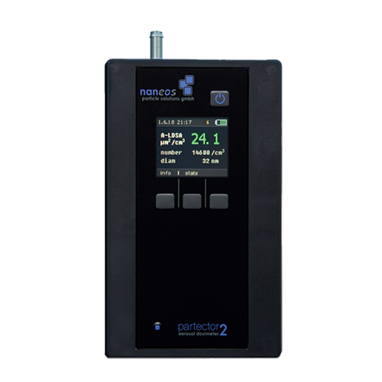

<!doctype html>
<html>
<head>
<meta charset="utf-8">
<title>Untitled Document</title>
</head>

<body>

</body>
</html>
<head>
<link rel="preconnect" href="https://fonts.gstatic.com">
<link href="https://fonts.googleapis.com/css2?family=Chango&display=swap" rel="stylesheet">
<style>


<link rel="preconnect" href="https://fonts.gstatic.com">
<link href="https://fonts.googleapis.com/css2?family=Chango&family=Ranchers&display=swap" rel="stylesheet">
<style>


header {
text-align: center;
}
	
div {position:static;

text-align: center;
display: block;
}
html {
background-image: url("ozadje.jpg");
background-repeat:repeat-y;
background-size: cover;
}

#penis {
font-style: italic;

}
#quote {
position:static;
bottom: 20%;
}
#slika {
margin-left: 30%;
width: 40%;
}
.kurac {

margin-top: 10%;
text-align: center;

}

#naslov {
color: #2C344E;
font-family: 'Ranchers', cursive;
}

</style>
<meta charset="utf-8">
<title></title>
</head>
<header>
  <h1 id="naslov">Dokazovanje prisotnosti nanodelcev </h1></header>
<strong><p>Pri tem uporabljamo pojave, pri katerih prisotnost nanodelca povzroči neko spremembo, ki jo lahko zaznamo. Eden od primerov je kondenzacija vode. Voda, lahko tudi kakšna druga tekočina se kondenzira na delcu, ki predstavlja jedro. Ko kapljica postane večja in doseže neko velikost, nam omogoči, da jo lahko vidimo z optičnimi instrumenti.</p></strong>
<strong><p>Ta postopek uporabljajo tudi detektorji nanodelcev v zraku. Na inštitutu Jožefa Štefana v Ljubljani uporabljajo kondenzacijske detektorje, ti pa so cenovno težko dostopni, zato imajo cilj izdelati prototip, ki bi bil bolj cenovno dostopen, lažji in čim bolj natančen.</p></strong>

<center></center>

<div class="kurac">
<p><h3><a href="index.html">Nazaj</a> <a href="https://inter4life.github.io/bine_animacija/2.html">Domov</a> <a href="Spletna stran 3.html">Naprej</a></h3></p>
</div>